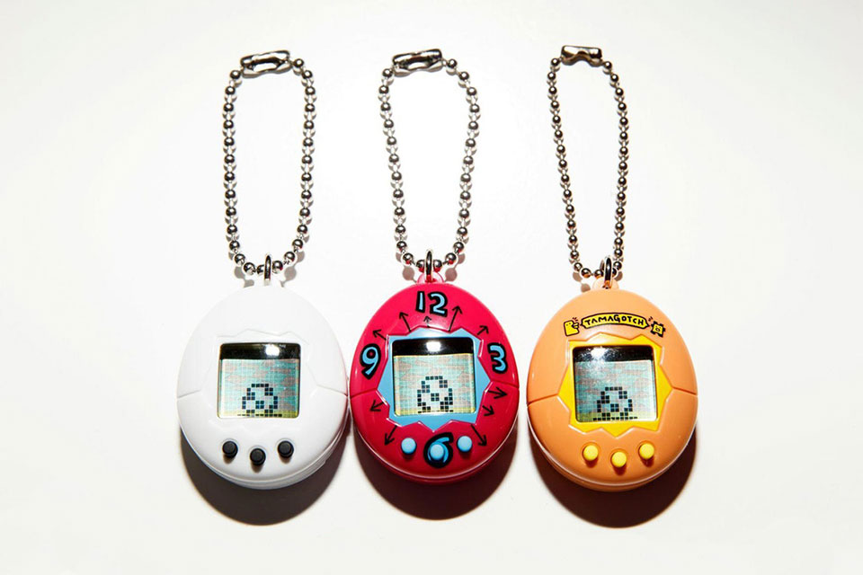

· 검사결과 ·
나와 어울리는 플래시 게임은
다마고치
(ISFJ)

가까운 사람에게는 한없이 헌신적이고 애정이 넘치는 당신에게는 추억의 ‘다마고치’를 추천합니다가벼운 관계를 싫어하고 깊은 관계를 선호하는 당신에게 다마고치는 당신만의 애완동물이 될거예요.
게임 속 애완동물이지만 보살펴 주지 않는다면 죽음에 이르기도 한답니다. 물론 타인의 변화에 민감한 당신이 그렇게 방치 하는 일은 없을거에요!
섬세한 당신은 다마고치의 상황에 언제나 민감하게 반응 해줄 거에요. 밥을 먹이고 배설물을 치우며 애정까지 꾸준히 줘야하는 다마고치! 다마고치는 당신이 어떻게 키우냐에 따라 다양한 모습으로 자라난답니다.
자신의 바운더리 안에 있는 사람에겐 언제나 진심인 당신과 함께라면 절대 아프지 않고 끝까지 자랄 수 있을 것 같아요.
집순이인 당신에게 다마고치는 너무나도 귀여운 애완동물이 되어줄 것 이랍니다! 본인의 따듯한 마음을 나만의 애완동물 다마고치와 나누어 보는 것은 어떤가요?
게임 속 애완동물이지만 보살펴 주지 않는다면 죽음에 이르기도 한답니다. 물론 타인의 변화에 민감한 당신이 그렇게 방치 하는 일은 없을거에요!
섬세한 당신은 다마고치의 상황에 언제나 민감하게 반응 해줄 거에요. 밥을 먹이고 배설물을 치우며 애정까지 꾸준히 줘야하는 다마고치! 다마고치는 당신이 어떻게 키우냐에 따라 다양한 모습으로 자라난답니다.
자신의 바운더리 안에 있는 사람에겐 언제나 진심인 당신과 함께라면 절대 아프지 않고 끝까지 자랄 수 있을 것 같아요.
집순이인 당신에게 다마고치는 너무나도 귀여운 애완동물이 되어줄 것 이랍니다! 본인의 따듯한 마음을 나만의 애완동물 다마고치와 나누어 보는 것은 어떤가요?
검사자 총
73,591명 중
나와 같은 유형을 가진 사람은
2,346명 입니다.